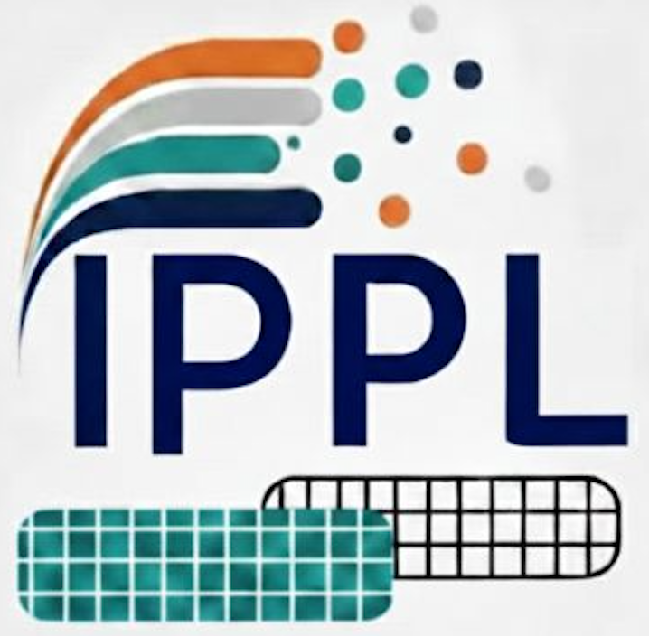

IPPL-logo; design by S.A.T.Klapproth


The IPPL (Independent Parallel Particle Layer) library provides performance portable and dimension independent building blocks for scientific simulations requiring particle-mesh methods, with Eulerian (mesh-based) and Lagrangian (particle-based) approaches. IPPL makes use of Kokkos, HeFFTe, and MPI (Message Passing Interface) to deliver a portable, massively parallel toolkit for particle-mesh methods. IPPL supports simulations in one to six dimensions, mixed precision, and asynchronous execution in different execution spaces (e.g. CPUs and GPUs).
Resources | Contributions | CI/CD | Citing IPPL |
Resources
The IPPL Manual contains comprehensive documentation, including:
- Installation Instructions: Guides for building locally and on various HPC systems.
- Framework Overview: A broad look at IPPL's core functionalities.
- Theory & Examples: Underlying theoretical concepts alongside practical code examples.
For detailed API, class, and file documentation, please visit our Doxygen site.
Feedback & Support If you find any issues with the manual, please report them in the Manual's GitHub repository.
Contributions
We are open and welcome contributions from others. Please open an issue and a corresponding pull request in the main repository if it is a bug fix or a minor change.
For larger projects we recommend to fork the main repository and then submit a pull request from it. More information regarding github workflow for forks can be found in this page and how to submit a pull request from a fork can be found here. Please follow the coding guidelines as mentioned in this page.
You can add an upstream to be able to get all the latest changes from the master. For example, if you are working with a fork of the main repository, you can add the upstream by:
You can then easily pull by typing
Please refer to the IPPL Manual for further details regarding contributions, fromatting, unit tests, etc.
CI/CD and PR testing
Please see Julich CI results and CSCS PR testing for further information.
Citing IPPL